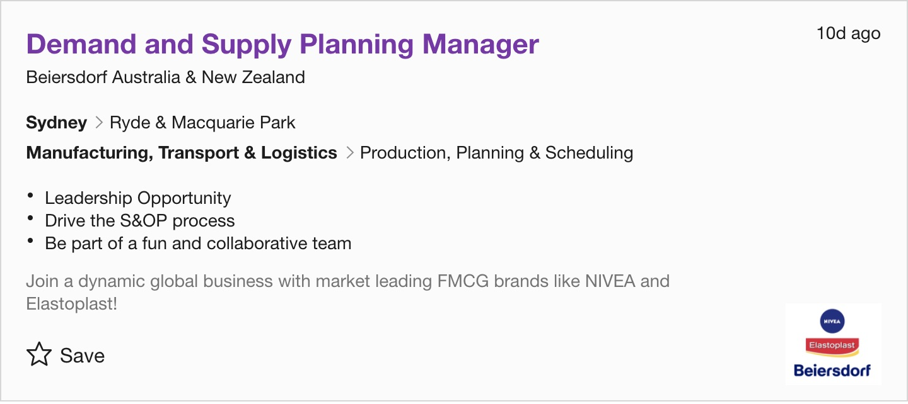
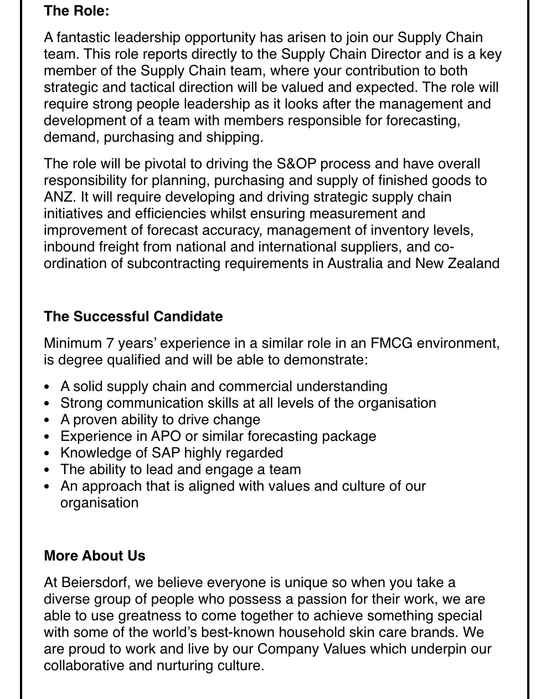
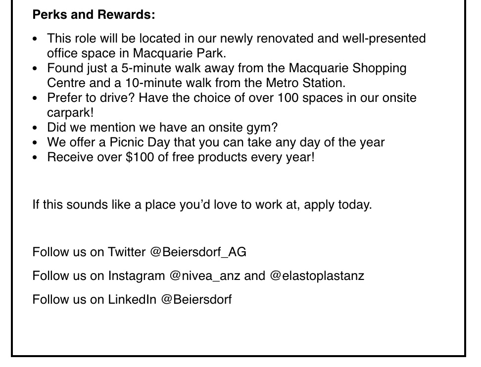

Name: Liseana Wang
Student Number: s3829532
Email address: s3829532@student.rmit.edu.au
Hello. My name is Liseana. I come from China. This is my first year in RMIT University and I am studying in Bachelor of Information Technology. I used to study in New Zealand about Supply Chain and Operation Management.
I am an outgoing and optimistic girl. As a student, I have the simple life. I like to use positive attitude towards to life. I have a strong ability to adapt and coordinate in case of problems. And I showed my ability of working in my last internship.
I have many hobbies. I like playing the Chinese Traditional Instruments, Guzheng and Zhongruan, and violin as well. Besides, I like playing badminton. Although I am not very good at playing badminton, I still like to play with my friends and always try my best.

I am going to study Information Technology and major in data management. The Bachelor of Information Technology in RMIT equips students with the skills to make a living as students solve, support, troubleshoot and design, everything from web sites to applications to programming networks, in organizations ranging from business and government to schools, healthcare and more. Based on my internship experiences, information is very important to organizations. So, I want to learn more about how to manage data well so that I can foresight the market with information and seize the opportunities. Furthermore, I am looking forward to study in RMIT university because I can try different courses in the first year such as web programming, user-centered design and so on.
RMIT is a world-famous university with first-class teaching resources and beautiful educational environment. RMIT is also leading in computer technology. For me, to study at such famous university will provide me a big step toward my future career. After 3 years’ study, not only I can get greater academic achievement, but also learn more about the cultures of Australia, which I believe will also benefit me a lot during my future life.
I expect to learn more about the general fundamentals ofI studied NCEA in high school, which includes Physics, Statistics, Calculus, Business and English. I think NCEA courses laid solid foundation for my future study in RMIT. Furthermore, I have had a few internship jobs because I want to know what I want to do in my future career. After I have done all the jobs, I believe that I want to study in Information Technology this will give me more job opportunities. So, I decided studying Bachelor of Information Technology in RMIT.
 
In my opinion, I don’t really want to limit my future career. The reason why I chose to study Information Technology is that I want to choose my ideal job in a wide range based on the period of big data.
This job is mainly to analyze the data and try to make operational plans as good as I can. Besides, analyzing data need to use many information technology skills.
I want to choose this job because I have tried similar job before and I have worked in Beiersdorf (NIVEA) before. I like the culture of this enterprise. I have learned many things in that internship on 2018. I learned how to use SAP system which has connection with this course. Importantly, I understand the importance of supply chain. Because of this opportunity, I know how to use the knowledge that I have learned from school in work, and at the same time, I exercise my working ability and have greater confidence in myself. The internship let me know that knowledge needs to be flexible.
This job may be my ideal job as I will learn many knowledges to support this job.
I want to develop an app that can help people who want to travel. I hope this app can let people who like to travel share their experiences and provide them with convenience on their trips. At the same time, I hope you can make friends on the platform.
Now people's living conditions are getting better and better. After satisfying their material life, people begin to pursue spiritual wealth. More and more people begin to travel and fall in love with travel. The meaning of travel, I think 1000 people's mind will have 1000 different answers. Some people say that traveling is a kind of spiritual practice. When we cross thousands of mountains and rivers, experienced a lot, finally, we return to the original starting point, began to carefully live, then we will know more than before the beautiful life. Such a good trip, I hope I can use the app I made to protect him. People can find the places or scenic spots they want to visit in the app. The app can calculate the most reasonable routes and recommend nearby hotels and travel methods. Share your itinerary and experiences during and after your trip. For those who want to travel but don't know where to go, they can get an idea based on what others share. The App will also provide interaction and encourage people to experience it for themselves.
App will be the travel website that the younger generation will use more. Thanks to the core advantages of "content + transactions", I have a better understanding of young people's preferences, making complex travel decisions, bookings and experiences easier, more efficient and more convenient. This app is a travel social network, a data-driven platform and a new type of travel e-commerce. Offers a variety of global tourist destinations. Transportation, hotels, scenic spots, catering, shopping, cars, local entertainment and other information and product reservation services.
Through AI technology and big data algorithm, the App will connect personalized travel information with travel product suppliers from all over the world, providing users with unique travel experience. The app's "content acquisition" mode matches supply and demand efficiently, helps platform merchants to improve profit margins and reshape the tourism industry chain.
I want to know how to stand out from other products of the same type and how to get product reservation services and discounts such as transportation, hotels, scenic spots, catering, shopping, car use, local entertainment, etc. Besides，these will be the difficulties this app need to overcome.